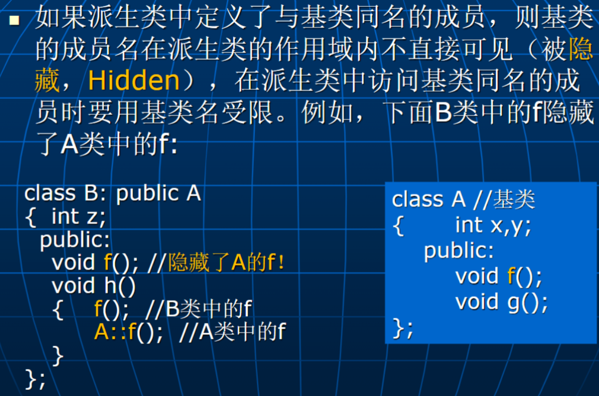
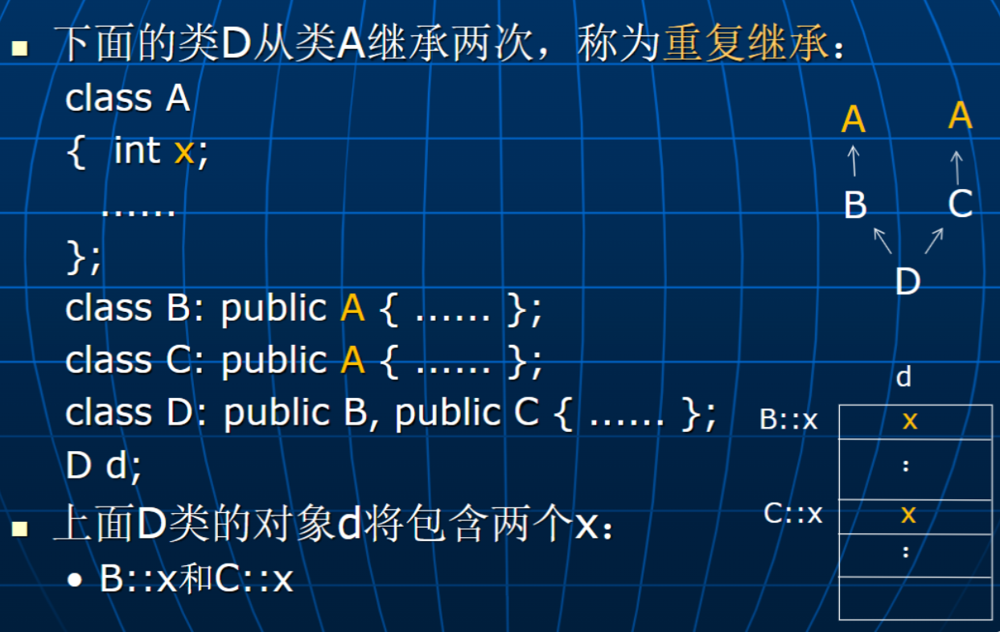

C++高级程序设计-5-继承
派生类
继承是指：
- 在定义一个新的类时，先把已有的一个或多个类的功能全部包含进来，然后再在新的类中给出新功能的定义或对已有类的某些功能进行重新定义。
- 不需要已有软件的源代码，属于目标代码复用！
在 C++中，定义单继承时，派生类只能有一个直接基类，其定义格式如下：
class <派生类名>:[<继承方式>] <基类名> { <成员说明表> };
- <派生类名>为派生类的名字。
- <基类名>为直接基类的名字。
- <成员说明表>是在派生类中新定义的和对基类重定义的成员。
- <继承方式>用于指出从基类继承来的成员在派生类中对外的访问控制。
除了拥有新定义的成员外，派生类拥有基类的所有成员（基类的构造函数、析构函数和赋值操作除外）
定义派生类时一定要见到基类的定义.
友元：
- 如果在派生类中没有显式指出，则基类的友元不是派生类的友元；
- 如果基类是另一个类的友元，而该类没有显式指出， 则派生类不是该类的友元。
派生类不能直接访问基类的私有成员。
protected 访问控制缓解了封装与继承的矛盾。
C++类向外界提供两种接口：
- public：供类的实例用户使用（通过对象）
- public+protected：供派生类使用

当创建派生类的对象时，
- 是先调用本身类的构造函数，但在进入函数体之前，会去调用基类的构造函数，然后再执行本身类构造函数的函数体！
- 默认情况下，调用基类的默认构造函数，如果要调用基类的非默认构造函数，则必须在派生类构造函数的成员初始化表中显式指出。
- 也就是说，构造函数的成员初始化表（即使没显式给出）中有对基类的构造函数的调用代码。
当派生类对象消亡时，
- 是先调用本身类的析构函数，本身类析构函数的函数体执行完之后，再去调用基类的析构函数！
- 也就是说，析构函数的函数体最后有对基类析构函数的调用代码。
虚函数与消息的动态绑定
静态绑定：
动态绑定：
- 在基类中用虚函数来指出
虚函数有两个作用： - 指定消息采用动态绑定。
- 指出基类中可以被派生类重定义的成员函数
- 对于基类中的一个虚函数，在派生类中定义的、与之具有相同型构的成员函数是对基类该成员函数的重定义（或称覆盖，override）
抽象类
纯虚函数是没给出实现的虚函数，函数体用“=0”表示
包含纯虚函数的类称为抽象类。
- 抽象类不能用于创建对象。
- 抽象类的作用：
- 为派生类提供一个基本框架
- 为同一个功能的不同实现提供一个抽象描述（接口）。
C++的类不是抽象数据类型，它是抽象数据类型的实现
用抽象类实现类的真正抽象作用
问题：
解决：
多继承
多继承是指派生类可以有一个以上的直接基类
- 继承方式及访问控制的规定同单继承。
- 派生类拥有所有基类的所有成员。
- 基类的声明次序决定：
- 对基类数据成员的存储安排。
- 对基类构造函数/析构函数的调用次序
多继承带来的问题
- 名冲突问题 —— 基类名受限
1 | |
- 重复继承问题

如果要求类 D 中只有一个 x，则应把 A 定义为 B 和 C 的虚基类
1 | |
对于拥有虚基类的类，创建该类的对象时：
- 虚基类的构造函数由该类的构造函数直接调用。
- 虚基类的构造函数优先非虚基类的构造函数执行。
1 | |
聚合与组合
聚合
聚合类的成员对象一般是采用对象指针表示，用于指向被包含的成员对象，而被包含的成员对象是在外部创建，然后加入到聚合类对象中来的。
组合
组合类的成员对象一般直接是对象， 有时也可以采用对象指针表示，但不管是什么表示形式，成员对象一定是在组合类对象内部创建并随着组合类对象的消亡而消亡。
C++高级程序设计-5-继承
https://astronautbase.github.io/2025/03/15/C-高级程序设计-5-继承/